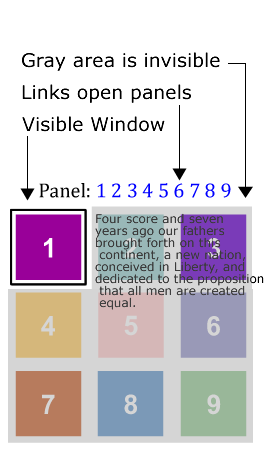
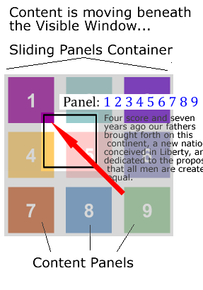
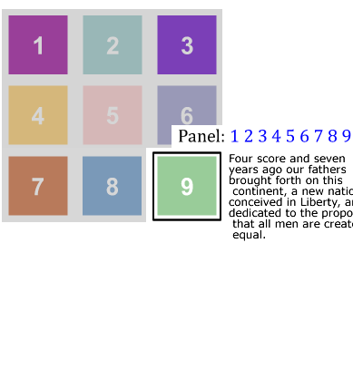

A Spry widget is a page element containing built-in behaviors that provide a richer experience by enabling user interaction. These behaviors can include functionality that lets users show or hide content on the page, change the appearance (such as color) of the page, interact with menu items, and much more.
The Spry framework supports a set of re-usable widgets, written in standard HTML, CSS, and JavaScript. You can easily insert these widgets - the code is HTML and CSS at its simplest - and then style the widget according to your liking.
Each widget in the Spry framework is associated with unique CSS and JavaScript files. The CSS file contains everything necessary for styling the widget, and the JavaScript file gives the widget its functionality. You must link both of these file to the page on which you want the widget to appear, otherwise the widget won't have any functionality or styling. For more information, see the appropriate sections about linking associated files in the topics that follow.
The CSS and JS files associated with a given widget are named after the widget, so it's easy for you to know which files correspond to which widgets. (For example, the files associated with the Sliding Panels widget are called SprySlidingPanels.css and SprySlidingPanels.js). The associated files for Spry widgets are located in widgets/accordion directory.
The Spry Sliding Panels widget is a disclosure widget that works by providing a 'frame' through which content is viewed and a content 'panel' which contains the page information. The panel is a block of content separated into discrete blocks or panels. When a user clicks on an element to show a specific block of content, the entire panel will move behind the frame until the selected content is in the window. The interesting part of this widget is that the content panel can use any layout and the widget will slide the content panel up, down or diagonally.
|  |  |  |
The content panel can be laid out in any way the user desires. Spry will figure out the best way to get there. Panels, can be in a straight line horizontally or vertically, in a grid as shown or any other layout.
The markup of the Sliding Panels widget is straightforward:
As with our other widgets, Spry only cares about the correct nesting structure. The actual tags don't matter. Also, the content blocks can be whatever you wish, but they all need to have an ID. As with all Spry widgets, the widget is activated by a script tag below the markup that contains the widget constructor and its options.
The Sliding Panels widget uses CSS to define the look and feel of the widget. Critical elements are the size of the visible window and the size of the content blocks. It is best if they are the same size, or coordinated to ensure that the content is visible. The basic code looks like (CSS added for convenience):
<style>
.SlidingPanels { position: relative; width: 200px; height: 200px; padding: 0px; } .SlidingPanelsContentGroup { position: relative; height:600px; margin: 0px; padding: 0px; } .SlidingPanelsContent { width: 100%; height: 400px; overflow: hidden; margin: 0px; padding: 0px; } </style> <a href="#" onclick="sp1.showPanel(0);">Panel 1</a> <a href="#" onclick="sp1.showPanel(1);">Panel 2</a> <a href="#" onclick="sp1.showPanel(2);">Panel 3</a> <div id="apDiv1" class="SlidingPanels"> <div class="SlidingPanelsContentGroup"> <div id="first">Content 1</div> <div id="second">Content 2</div> <div id="third">Content 3</div> </div> </div> <script> var sp1 = new Spry.Widget.SlidingPanels("apDiv1"); </script>
In this example, the <a> tags are used to change between panels. The showPanel behavior is used to select the panel. Spry uses a zero based counting system, so the first panel is '0'.
<head>
<script language="javascript" type="text/javascript" src="SprySlidingPanels.js"></script> <link href="SprySlidingPanels.css" rel="stylesheet" type="text/css" /> </head>
<body>
<div id="slidingPanel_1" class="SlidingPanels">
</div>
</body>
<body>
<div id="slidingPanel_1" class="SlidingPanels">
<div class="SlidingPanelsContentGroup">
</div>
</div>
</body>
<body>
<div id="slidingPanel_1" class="SlidingPanels">
<div class="SlidingPanelsContentGroup">
<div id="content1" class="SlidingPanelsContent">The Content 1</div>
<div id="content2" class="SlidingPanelsContent">The Content 2</div>
<div id="content3" class="SlidingPanelsContent">The Content 3</div>
</div>
</div>
</body>
<body>
<div id="slidingPanel_1" class="SlidingPanels">
<div class="SlidingPanelsContentGroup">
<div id="content1" class="SlidingPanelsContent">The Content 1</div>
<div id="content2" class="SlidingPanelsContent">The Content 2</div>
<div id="content3" class="SlidingPanelsContent">The Content 3</div>
</div>
</div>
<script language="javascript" type="text/javascript">
var sp1 = new Spry.Widget.SlidingPanels("slidingPanel_1");
</script>
</body>
That is the only markup required for the widget, but we need to add buttons to switch between panel. <body>
<a href="#">Panel 1</a>
<a href="#">Panel 2</a>
<a href="#">Panel 3</a>
<div id="slidingPanel_1" class="SlidingPanels">
<div class="SlidingPanelsContentGroup">
<div id="content1" class="SlidingPanelsContent">The Content 1</div>
<div id="content2" class="SlidingPanelsContent">The Content 2</div>
<div id="content3" class="SlidingPanelsContent">The Content 3</div>
</div>
</div>
<script language="javascript" type="text/javascript">
var sp1 = new Spry.Widget.SlidingPanels("slidingPanel_1");
</script>
</body>
<body> <a href="#" onClick="sp1.showPanel(0);">Panel 1</a> <a href="#" onClick="sp1.showPanel(1);">Panel 2</a> <a href="#" onClick="sp1.showPanel(2);">Panel 3</a> <div id="slidingPanel_1" class="SlidingPanels"> <div class="SlidingPanelsContentGroup"> <div id="content1" class="SlidingPanelsContent">The Content 1</div> <div id="content2" class="SlidingPanelsContent">The Content 2</div> <div id="content3" class="SlidingPanelsContent">The Content 3</div> </div> </div> <script language="javascript" type="text/javascript"> var sp1 = new Spry.Widget.SlidingPanels("slidingPanel_1"); </script> </body>Remember that Spry uses a zero based counting system, so the first panel is number '0'.
There are options that can be set for the widget that control things like the duration of the sliding and the transition type. Options are added to the constructor script. Behaviors activate the widget and are added to other page elements.
Constructor Options
| name | type | default value | description |
|---|---|---|---|
| defaultPanel | panel number or ID | first panel | This determines the panel that is displayed when the page loads. |
| duration | integer | 500 milliseconds | In milliseconds. Determines the length of time to get to the selected panel. The same duration is used regardless of the distance to the specified content container. This means that the speed of the animation will be slower for closer panels and quicker for further panels, but the duration is always the same. |
| enableKeyboardNavigation | true/false | true | Setting to false will allow the widget to get focus, but will disable the previous and next keys: |
| enableAnimation | true/false | true | Setting to false will remove the panel animation. Panels will show up instantly. |
| fps | integer | 60 | Frames per second. Use fps and duration to fine tune the smoothness of the transition. A higher fps is generally smoother. Setting too high might affect performance. |
var sp1 = new Spry.Widget.SlidingPanels("panels",{duration:1000, fps:80, defaultPanel:4, enableAnimation:false, enableKeyboardAnimation:false});
The Sliding Panels widget only has one behavior. The 'showPanel' behavior is used to switch between panels.
widgetname.showPanel(panel # or ID); - This behavior will advance the widget to display the specified panel. The value of the showPanel behavior is the number of the panel (using the zero based counting system, in order of the panel markup) or the ID of the panel to be shown. Use the var name of the widget to tell the browser which widget is being controlled.
- <a href="#" onClick="sp1.showPanel(4);">
- <button onMouseOver="sp2.showPanel('panelID');"
A guiding principle of Spry Widgets is that users should use CSS to define the look of the widget. The Spry team provides a CSS file as a starting point for styling, and we try to name classes so they are helpful in understanding the workings of the widget. Users may use the default style names or create their own.
.SlidingPanels - This class goes on the outer container of the widget. This class sets the size of the visible window. Generally, you will want this window size to match your content container size.
.SlidingPanelsContentGroup - This class goes on the first inner tag that contains all the content panels. This class defines the size of the Sliding Panel. Setting the width, height and float of this panel will determine how the panel moves: horizontally, vertically or diagonally. Spry determines the shortest path to the chosen panel. Panels can be stacked horizontally, vertically or in a block of rows.
.SlidingPanelsContent - This class determines the size of the individual content panel. This should match the size of the visible window, but style however needed for the design.
Note: Due to differences in browser implementation, the Sliding Panels widget cannot handle margin and padding on the widget structure elements. If you want to use margin and padding in the content, apply it to a tag within the content container, not on the content container.
Keyboard navigation can be enabled by adding the 'tabindex' attribute on the top level container of the widget.
<div id="slidingPanel_1" class="SlidingPanels" tabindex="0">
While the tabindex attribute is not W3C valid on non-form elements, IE and Mozilla-based browsers all support tabindex on page elements specifically for enabling keyboard navigation. This helps with accessibility concerns. The Spry team feels that the added benefit of accessibility is worth the invalid use of the attribute. Of course, it is not required for widget functionality and therefore is optional.
There are 2 scenarios in which Spry data can be used with widgets. The first scenario is to use Spry data to populate the content of the widget. The second scenario is to use Spry data to generate the content AND the markup.
Scenario 1
Spry data can be used to generate the content of the widget. For this case, the content containers should be spry:regions and the script is placed at the bottom of the page as usual.
<body>
<div id="slidingPanel_1" class="SlidingPanels">
<div class="SlidingPanelsContentGroup">
<div id="content1" class="SlidingPanelsContent" spry:detailregion="ds1">{content}</div>
<div id="content2" class="SlidingPanelsContent" spry:detailregion="ds2">{description}</div>
<div id="content3" class="SlidingPanelsContent" spry:detailregion="ds3">{photo}</div>
</div>
</div>
<script language="javascript" type="text/javascript">
var sp1 = new Spry.Widget.SlidingPanels("slidingPanel_1");
</script>
Scenario 2
Spry data can be used to generate the widget markup by building out the structure in a spry:region or detailregion. In this case, the script tag should be put inside the spry:region, at the bottom after the markup. Remember that each content container needs an unique ID.
<body>
<div spry;region="ds1" spry:repeatchildren="ds1"><a href="#" onClick="sp1.showPanel('content{_ds_rowID}');"></div>
<div id="slidingPanel_1" class="SlidingPanels" spry:region="ds1">
<div class="SlidingPanelsContentGroup" spry:repeat="ds1">
<div id="content{_ds_rowID}" class="SlidingPanelsContent">{content}</div>
</div>
<script language="javascript" type="text/javascript">
var sp1 = new Spry.Widget.SlidingPanels("slidingPanel_1");
</script>
</div>
Copyright © 2007. Adobe Systems Incorporated. All rights reserved.